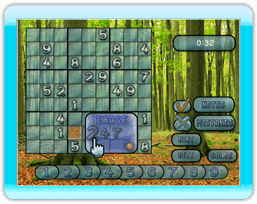
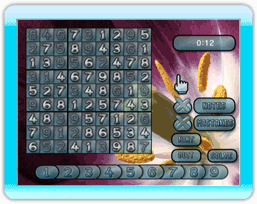

7 |
Opciones de Juego |
 |

Notas temporales Activando la palanca en la opción de notas temporales, te permitirá arrastrar y soltar hasta cuatro números en las esquinas de una celda individual. Muchos jugadores de Sudoku escogen usar la función de notas, si hay dos o más opciones de números posibles para una celda.
Cuando tú deseas confirmar tu número en una celda con más de un número destacado, presiona el Botón A para mostrar el menú de confirmación y seleccionar el número de tu elección. Nota que si tú tienes "Permite Errores" desactivado, no puedes seleccionar números incorrectos, desde el menú de confirmación.
Para borrar un número destacado dentro de una celda, presiona el Botón B mientras estas sobre la celda, para sacar el "Menú de Borrar".
Permite Errores Desactivando la opción de "Permite Errores" Te previene de poner un número incorrecto en el tablero de Sudoku. Si deseas poner un número sin restricciones en el tablero, activa esta opción.
Pista La opción de Pista revelara al azar, un número en el tablero. Errores Presiona y mantiene el Botón A sobre la opción de Errores, para resaltar cualquier error que puedas haber hecho en el tablero. Esta opción esta solo disponible cuando "Permite Errores" esta activado.
Soluciona Esta opción completara el resto del crucigrama por ti.  Dejar Esta opción mostrara un menú que aparecerá en donde tú puedes escoger, ya sea empezar un nuevo juego con los mismos escenarios, o regresar al menú principal. |

 |
 |
 |